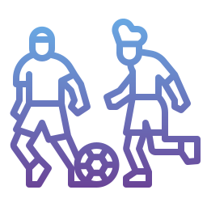

Talvez a mesma galera que frequente aqui respeita fora daqui, mas aqui não, aqui é um ambiente diferente".
Ele contou que sua paixão não é só pelo time, mas por estar ali na atmosfera da arquibancada e sentir a vibração da torcida. Ele descreve estar no estádio como uma sensação de estar com o time, empurrando contra o adversário, fazendo parte daquele momento, diferente do que ele sentia assistindo pela televisão com seu pai, quando pequeno.
Nós perguntamos como ele se sentia nos estádios enquanto LGBTQIA+ e aí a revelação que nos impressiona: “eu me sinto à vontade”. Talvez tenha sido a primeira vez que escutamos isso, por isso a surpresa. E ele explica que sabe que o ambiente é muito hostil para o público LGBTQIA+, mas que quando ele vai ao estádio com seus amigos, que muitas vezes também são gays, “fica todo mundo na sua”, ou seja, até os que estão com os namorados não trocam carícias e, em suas palavras, respeitam o ambiente e as pessoas que estão ao redor.
Ele lembrou que aceitou sua homossexualidade aos 18 anos e que isso não afetou seu contato com futebol, estádios e sua relação com o time, então sem fase de desespero entre adolescência>homossexualidade>futebol, para ele foi como é para um menino hétero manter a relação com o esporte, normal e tranquilo. Zé não é assumido para a família, mas é para os amigos e inclusive já foi aos estádios acompanhado pelo ex-namorado, porém, os dois não trocaram carinhos ou algo que demonstrasse que estavam juntos como mais que amigos. Quando vai com os amigos gays, ele sempre os alerta “não fica olhando, os caras podem te bater”.
Essa ideia de estar ali “de boa” porque não há nenhum tipo de contato físico entre eles e também a omissão de qualquer atitude que possa ser considerada “gay” pode ser chamada de “gay à paisana”, o que normalmente não seria um problema, pois, como mostramos o Josiel e o Caio também utilizam desse artifício, mas de forma consciente e tentando combatê-la. O ponto em questão desta vez é, principalmente a omissão de Zé sobre a sua realidade.
Seu posicionamento deixa a todos com uma pulga atrás da orelha, afinal, seu discurso é diferente dos que ouvimos antes, mas ele justifica que, em seu ponto de vista, a sociedade ainda não está preparada para conviver com a comunidade LGBTQIA+ e que eles precisam se manter tranquilos. Sua esperança é que as próximas gerações possuam um pensamento diferente dos que já estão nas arquibancadas atualmente e possam refletir mais sobre a diversidade de públicos que amam futebol. Ele também falou sobre a diferença na aceitação da mulher lésbica e do homem gay, e de como o futebol tem, não só a homofobia, mas também um machismo muito forte.

A problemática em questão com relação a fala de Zé sobre considerar que o dever de lutar por um espaço está nas mãos de outras pessoas, e pior, de pessoas que ainda nem nasceram, é que já há uma luta, que as pessoas LGBTQIA+ estão morrendo hoje, e morreram ontem, e pra que isso não ocorra num amanhã mais próximo possível é que existe a luta, é por isso que Josiel e Caio tentam ir com mais frequência aos estádios, por isso que eles colocaram a fotinha deles na publicação do São Paulo F.C., por isso que a Vivi reconhece que foi um erro ter deixado de beijar a namorada dentro do metrô em um dia de jogo, por isso que ela pinta o rostinho com a bandeira LGBTQIA+, pra passar por cima de quem acha que “eles que lutem”, pra mostrar que a luta é agora e que, quem se beneficia da luta sem participar ou reconhecê-la é além de hipócrita desonesto com todos os seus. Cabe a nós educar e conscientizar as crianças, e principalmente os adultos sobre o direito de ir e vir, o direito de ser e de existir de qualquer pessoa. Cabe a cada um de nós, independente de religião, etnia ou sexualidade, lutar por essa causa e para que num futuro próximo nenhum de nós sofra por amar!